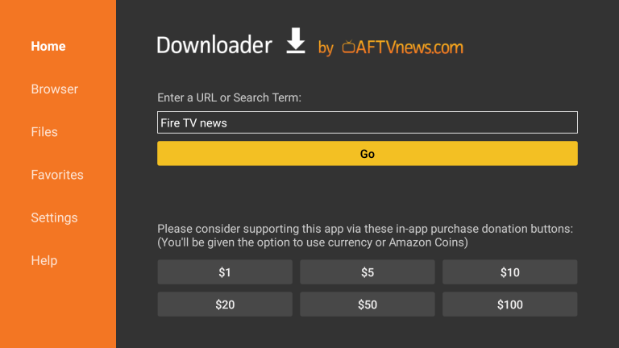

Step 1: Install Downloader
الخطوة 1: تثبيت Downloader

Open Google Play Store on your Android TV and search for Downloader (by AFTVnews).
Install the app.
افتح متجر Google Play على جهاز Android TV وابحث عن تطبيق
Downloader (من AFTVnews) ثم قم بتثبيته.
Step 2: Allow Installation
الخطوة 2: السماح بالتثبيت
Open Downloader. When asked, allow permission to install apps from this source.
افتح تطبيق Downloader ووافق على السماح بتثبيت التطبيقات من هذا المصدر عند الطلب.
Step 3: Enter Download Code
الخطوة 3: إدخال كود التحميل
In Downloader, choose Enter Code and type:
داخل تطبيق Downloader اختر Enter Code ثم أدخل الكود:
8682586
Step 4: Install PlayMe
الخطوة 4: تثبيت PlayMe
Wait for the download to finish, then select Install.
After installation, choose Open.
انتظر حتى يكتمل التحميل ثم اختر تثبيت.
بعد الانتهاء، اختر فتح.
Step 5: Enjoy Streaming
الخطوة 5: استمتع بالمشاهدة
Open PlayMe, choose your preferred mode, and enjoy smooth streaming.
افتح تطبيق PlayMe، اختر وضع المشاهدة المناسب، واستمتع ببث سلس.
Works on Android TV and TV Box devices. Internet is required for first activation only.
يعمل على أجهزة Android TV و TV Box. الإنترنت مطلوب فقط عند التفعيل الأول.